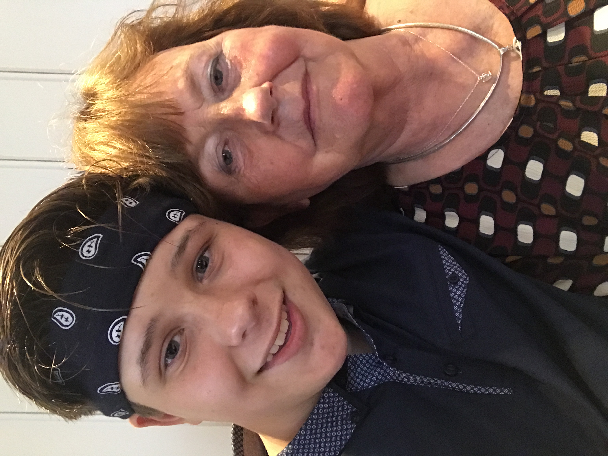

Mij mening en ervaring met Hugs.Amsterdam
Hugs.amsterdam is een geweldige winkel; ik geef de winkel 5 sterren. Als je de winkel binnenkomt, voelt het even alsof je in een soort sprookje bent beland. Je kijkt je ogen uit naar de prachtige collectie! Ik nam mijn oma vorig jaar mee naar Hugs.amsterdam en sindsdien is ze hier elke dag.
